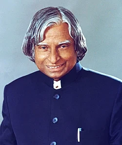

A. P. J Abdul Kalam
1931-2015
Missile Man Of India
Avul Pakir Jainulabdeen Abdul Kalam was an Indian aerospace scientist and statesman who served as the president of India from 2002 to 2007. Born and raised in a Muslim family in Rameswaram, Tamil Nadu, Kalam studied physics and aerospace engineering. Wikipedia
Born: 15 October 1931, Rameswaram
Died: 27 July 2015 (age 83 years), Shillong
Full name: Avul Pakir Jainulabdeen Abdul Kalam
Awards: Bharat Ratna, Veer Savarkar Award · See more
Education: Madras Institute of Technology, Anna University (1955–1957) · See more
Parents: Jainulabiddin Marakayar, Ashiamma Jainulabiddin
Biographyies
Born on October 15, 1931, in Rameswaram, Tamil Nadu, India.
He was a successful academic and earned a degree in Aeronautical Engineering from the Madras Institute of Technology.
Joined the Defence Research and Development Organisation (DRDO) in 1958
Became project director of the SLV-III in the Indian Space Research Organisation (ISRO), which was India's first domestically designed and produced satellite launch vehicle
Played a key role in developing India's missile and nuclear programs
Read more about A.p.j.Abdul Kalam on Wikipedia